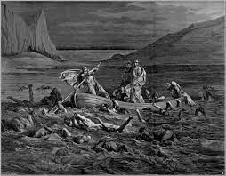

Where do we go when we die? Is it our soul that goes? What defines as a soul? There are many more questions about what happens after death, but specifically, what happens to the soul when we do die? Since ancient times, these questions about soul and life after death have been explored countless times by many known Greek philosophers such as Aristotle, Plato, and Epicurus. These questions were also answered and explored by the sacred texts of religions we know of today, specifically Christianity and Judaism. But how does the human soul behave after the “body” dies in Ancient Greece compared to those in Christianity and Judaism, and how did the beliefs differ in the creation of one’s soul?
The thought of death is something that everyone thinks about. In this page, I will go into details about our soul, because in in Christanity, Ancient Greece, and Judaism, they all believed in the thought that the humans has a soul. Everyone human has a soul. And I will go into how each one of them thinks.
“And the Lord God formed man of the slime of the earth: and breathed into his face the breath of life, and man became a living soul” (Book of Genesis/Bible, Chapter 2 - 7). This suggests that we humans at first did not possess a soul at first, but it was because of God that we have received the soul. Thus, giving us the idea that a soul was given to the people by God.
Christianity and Judaism share similar thoughts of the soul, one example is how God has created men, in the Book of Genesis, it is stated that, “And the Lord God formed man of the slime of the earth: and breathed into his face the breath of life, and man became a living soul” (Book of Genesis/Bible, Chapter 2 - 7). This suggests that humans did not possess a soul at first, but it was because of God that we have received the soul. Thus, gives the idea that a soul was given to the people by God
Matthew 10:28 “And do not fear those who kill the body, but are unable to kill the soul; but rather fear Him who is able to destroy both soul and body in hell.” This suggests that even after death, those who are "dead" will presumebly live on.
In death, Christianity’s belief that the soul will return to God when one dies. In the Book of Ecclesiastes of the Bible, it is said, “And the dust return into its earth, from whence it was, and the spirit return to God, who gave it” (Book of Ecclesiastes – Bible, Chapter 12 – 7). This suggests that the soul does not keep on living on as different people have different souls.
In the fifth century, having a soul simply means that you are alive (Lorenz Hendrik, Ancient Theories of Soul). While the two’s thoughts of how the soul came to be is different, the part where life requires the soul stays the same within the three different thoughts and ideas.
In the Odyssey, when Odysseus goes down into the underworld, he is encountered by one
of his shipmates, Elpenor and asked why he is down here. Elpenor describes what happened to 
In Phaedo, when asked the question, “Is the soul immortal?” Cebes has replied with, “It is” and the person asking the question, replied “Good” as if the group as agreed upon the answer (Pluto, Phaedo, 60). Because they are considered the “best” philosophers during that time, it can be implied that their thoughts may have a massive impact onto the publics view of thinking and as a result – we can think that most of the public’s view of the soul could be similar. Many Gree philosophers have thought the same thing about the soul, and it is the fact that the soul is indestructible and immortal (Pluto, Phaedo, 62-63).
In the fifth century, having a soul simply means that you are alive (Lorenz Hendrik, Ancient Theories of Soul). While the two’s thoughts of how the soul came to be is different, the part where life requires the soul stays the same within the three different thoughts and ideas.
The people of Judaism also believes something similar to what Christanity believes in.
In the Hebrew, where “Then the Lord God formed man of the dust of the ground, and breathed into his nostrils the breath of life; and man became a living soul” (Hebrew – Genesis, Chapter 2 – 7).
“A Jewish soul has an intrinsic “spirit of holiness and purity” to it, a spirit that can purge itself of any “impure spirits and powers” that wish to attach themselves to the body” (Saul Epstein and Sara Libby Robinson, The Soul, Evil Spirits, and the Undead: Vampires, Death, and Burial in Jewish Folklore and Law, 240). This statement reasons that the soul is the meaning or is the spirit of something pure and has a holiness that one must protect from the evils of the words, such as sins. According to the Body and Soul, the soul exists in two places, one is separated from the body and that they exist in a fully conscious state in the ethereal realm (My Jewish Learning Body and soul). In the Hebrew, it is stated that, “For the living know that they shall die; but the dead know not any thing, neither have they any more a reward; for the memory of them is forgotten.” (Ecclesiates – Hebrew, 9 – 5) This statement is similar to that of what happens in Christianity where the souls of the “current” people are lost, and their memories are gone.
This matters because lets say you were to die, what do you think would happen? Would you think it is over? Or would you think you would keep living on? Because people like Aristole have thought about what happens after death, it also gives people the imagination, or the hope that there's potentially life after death, or in some cases reincarination.
If people who think that the soul is the God's Gift, it is important to also know where the soul is going, whether it's being punished, or staying at one place, or being reincarinated.
Secondary Sources:
Primary Sources: